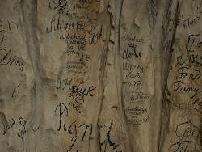
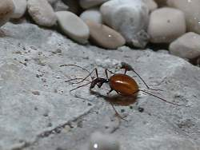

Speleobiološka Postaja
Speleobiological Station
Useful Information
 |
| Image: the entrance to the speleobiologic station. |
| Location: | In Postojna, 1km from the centre. From Postojna exit follow road to the city, after 1km turn right into Postojna. In Postojna city center turn left, vast parking lots at the city limits. Well signposted. 50km south of Ljubljana. |
| Open: | All year daily 9-18, start every hour 10min after the hour. |
| Fee: | Adults SIT 1000, Children SIT 500. |
| Classification: | A speleobilogic station featuring cave animals. Historic cave entrance. |
| Light: | electric |
| Dimension: | n/a |
| Guided tours: | D=45min. |
| Photography: | |
| Accessibility: | |
| Bibliography: | |
| Address: | |
| As far as we know this information was accurate when it was published (see years in brackets), but may have changed since then. Please check rates and details directly with the companies in question if you need more recent info. |
|
History
Description
 |
| Image: inside the speleobiological station. |
Located right at the cave entrance of
 Postojnska Jama,
the speleobiologic museum is an interesting completion of the Postojna
experience.
It includes numerous true cave animals, but also a very interesting
archaeological profile in the historic cave entrance, and a unique possibility
to have a look at the historic graffiti on the white cave walls and speleothems.
This is an old cave entrance of Postojna cave which is not used any more.
The cave train starting at the nearby entrance of Postojna uses a parallel
passage to enter the cave.
Postojnska Jama,
the speleobiologic museum is an interesting completion of the Postojna
experience.
It includes numerous true cave animals, but also a very interesting
archaeological profile in the historic cave entrance, and a unique possibility
to have a look at the historic graffiti on the white cave walls and speleothems.
This is an old cave entrance of Postojna cave which is not used any more.
The cave train starting at the nearby entrance of Postojna uses a parallel
passage to enter the cave.
|  |
| Image: graffiti on the cave walls. |
This station is intended to explain the life of cave animals to the visitors. This is difficult, as those animals are rather strange, and most of them are very small and hard to see. Thus a visit starts with a very interesting movie about cave animals which is shown in English or Slovenian. After this explanation, the visitor enters the cave through an air tight lock.
The first stop is a profile of the cave floor. To build the path, they had to cut through the cave floor, which revealed many details about the history of the cave, geologic as well as archaeological facts. Now some nice side passages show interesting speleothems like stalactites, stalagmites and rimstone dams. As this is not a cave tour of Postojna, the visitor has enough time to have a look at them. There is a round trip and lots of explanatory plates, so the visitor strolls around and has the chance to have a close look at anything he's interested in.
|  |
| Image: probably the most famous cave animal of Postojna, the cave bug which was discovered here, called Leptodirus hohenwarti. |
The main station is located in a bigger chamber.
Here are numerous aquariums and terrariums with cave animals.
There are
 olms
(Proteus anguinus), amphibic salamanders living in caves all around.
This are probably the best known and most spectacular cave animals.
They are known since centuries, and the locals sold them to visitors when they
catched them in springs and wells.
olms
(Proteus anguinus), amphibic salamanders living in caves all around.
This are probably the best known and most spectacular cave animals.
They are known since centuries, and the locals sold them to visitors when they
catched them in springs and wells.
The second most important cave animal is a small blind bug, only 8mm long with a voluminous body. This bug called Leptodirus hohenwarti, was discovered in 1831 by accident. There are some differences between this bug and its relatives outside caves, so this was the first time the differences between cave animals and other animals were discovered and described. So this was the first true troglobiont living on land discovered ever, and it has its place in the history of speleology.
The speleobiologic station is a sort of museum, but also a little bit like a zoo. This is rather difficult, as true troglobionts, animals living in the darkness of caves, do not like light. Most of them are extremely sensitive to any change in their environment. This includes light, temperature, humidity, and of course the noise of the visitors. So they do not really like the climate in this station, which is influenced by the proximity to the entrance and the visitors. The air tight lock at the entrance is necessary, but not sufficient. So the result is a continuous demand on new animals to fill the zoo, and continually animals die in the station. Other animal, like the proteus are kept in the aquarium for some time an then released. So the station is not environment friendly. On the other hand, this is the only place on Earth were visitor can have a look on this extremely strange cave live, so we recommend a visit very much.
|
|
| Speleobiološka Postaja Gallery |
 Search Google for "Speleobiološka Postaja"
Search Google for "Speleobiološka Postaja" Google Earth Placemark
Google Earth Placemark{kind=link}
{kind=link}
{kind=link}
{kind=link}